全链贯通
从科学问题、计算设计持续推进到实验验证和反馈迭代

面向重要复杂科研任务的可信科研执行平台，以学科模型和专业能力为基础，贯通数据、计算与实验，将每一次执行沉淀为可追溯、可复现、可持续迭代的科研资产
在线使用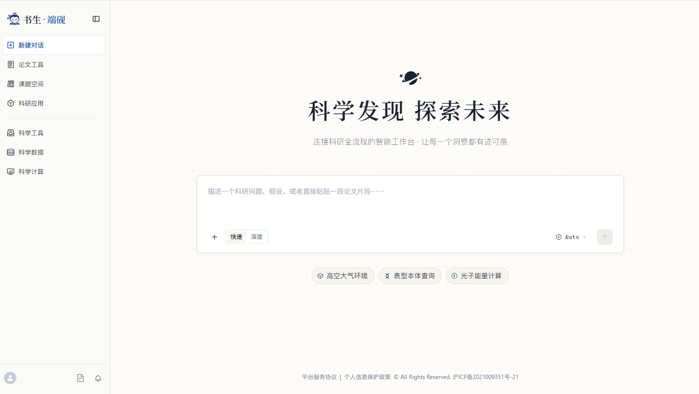
既懂学科、也贯通科研全链路，将每一步执行沉淀为可复用、可追溯的科研产物，并以安全可控、开放互联的体系支撑复杂科研任务
从科学问题、计算设计持续推进到实验验证和反馈迭代
理解专业知识，更掌握领域中的数据、工具、标准方法和研究范式

交付图表、数据、代码、结构文件、实验方案和研究报告，而不是一段不可复用的回答

证据随执行产生，产物与来源绑定，关键结论可追溯、可复核

数据尽量留在科研现场，外部访问经过授权，代码与工具在隔离环境中执行

通过标准接口和协议接入模型、数据、工具、智能体、算力和实验设施

从科学问题、计算设计持续推进到实验验证和反馈迭代
提出问题
 文献调研
文献调研
 假设生成
假设生成
方案设计
湿实验
 实验数据获取
实验数据获取
 结果分析
结果分析
结果可靠性判断
再次验证
 方案修正
方案修正
理解专业知识，更掌握领域中的数据、工具、标准方法和研究范式
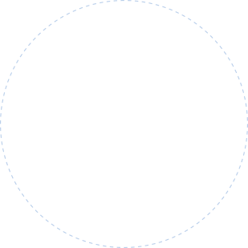
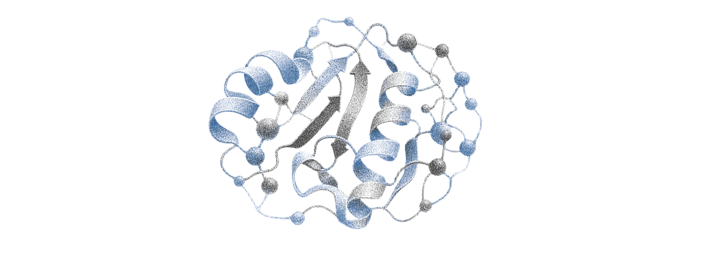
VenusPodVenusPod 构建全球最大 150 亿序列数据集，破解 AI 蛋白质设计数据瓶颈
解析地质、气候与环境数据，探索地球系统的奥秘
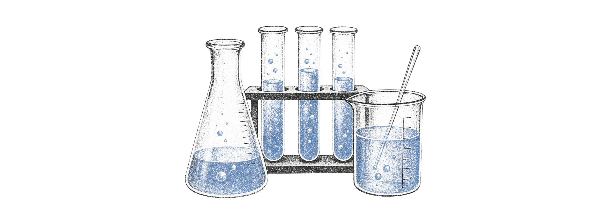
Migo-Chem助你快速设计实验、分析数据，提升化学研究效率
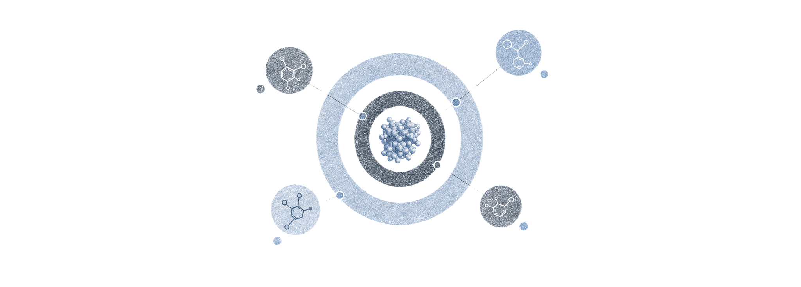
OPEN-TARGETS-开放靶标平台（Open Targets Platform）是一个整合了基因组学、化学和药物数据的综合性平台，旨在加速药物靶标发现和验证。
CZ CELLxGENE 是一个专注于单细胞转录组学数据的开放平台，提供高质量的单细胞 RNA 测序数据集，支持科研人员进行细胞类型鉴定、基因表达分析和生物标记物发现等研究。
NCI Genomic Data Commons (GDC) 是美国国家癌症研究所（NCI）建立的基因组数据共享平台，旨在整合和标准化癌症基因组数据，为研究人员提供高质量的数据资源。
多组学整合 - 整合多组学：基因表达、蛋白质数据、途径富集和代谢途径。使用此技能进行多组学任务，包括获取跨癌症的基因表达、通过加入获取 uniprotkb 条目、获取功能富集 kegg 获取。
计算气象和气候科学的大气参数，包括科里奥利参数、地转风、热量指数、位温和露点。
女娲学习方法论 Skill。它解决的是知识工作者输入过多、输出过少、读了很多论文但无法形成知识体系、无法持续输出的痛点，强调先建框架再填内容。
交付图表、数据、代码、结构文件、实验方案和研究报告，而不是一段不可复用的回答
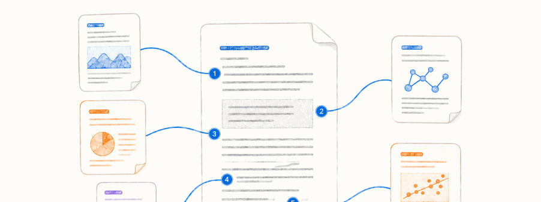
构建可追溯知识地图，梳理证据层级与研究演进；识别共识、争议及证据缺口，辅助选题、问题收敛与假设生成
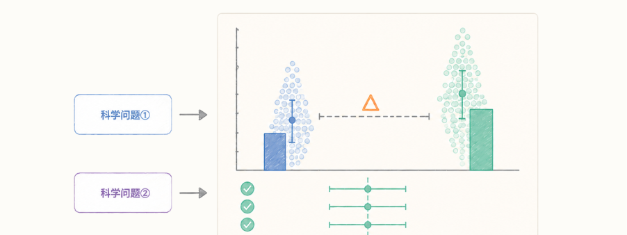
将科研问题转化为可检验定量结论，体现效应大小、不确定性与稳健性，支撑组间对比、风险研判及后续实验决策阈值设置
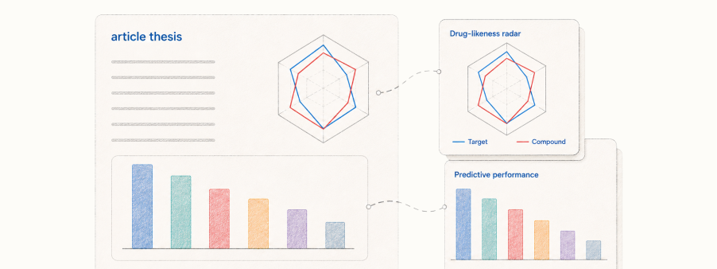
交付图表、数据、代码、结构文件、实验方案和研究报告，而不是一段不可复用的回答
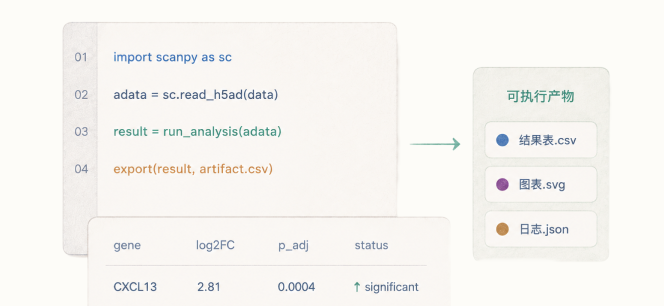
沉淀可审查、复现、迁移的方法资产，记录依赖、参数与版本，支持复跑及二次分析
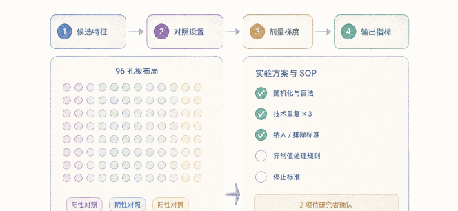
将分析结论转为验证路径，明确变量、对照、指标与标准，提升因果识别与实验效率
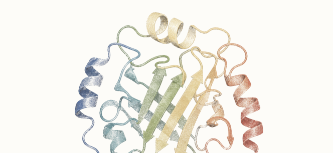
探索难实验的结构与机制，对比方案生成预测，缩小实验空间、降低试错成本
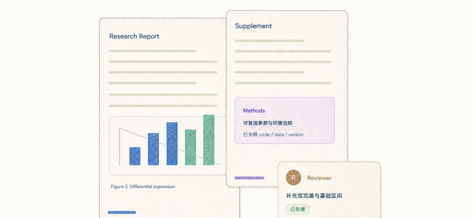
整合证据、方法与结论形成科研叙事，支持协作评审，沉淀组织知识资产
证据随执行产生，产物与来源绑定，关键结论可追溯、可复核
关联原始文献、引用位置；保留证据摘录及其与综述结论的对应关系
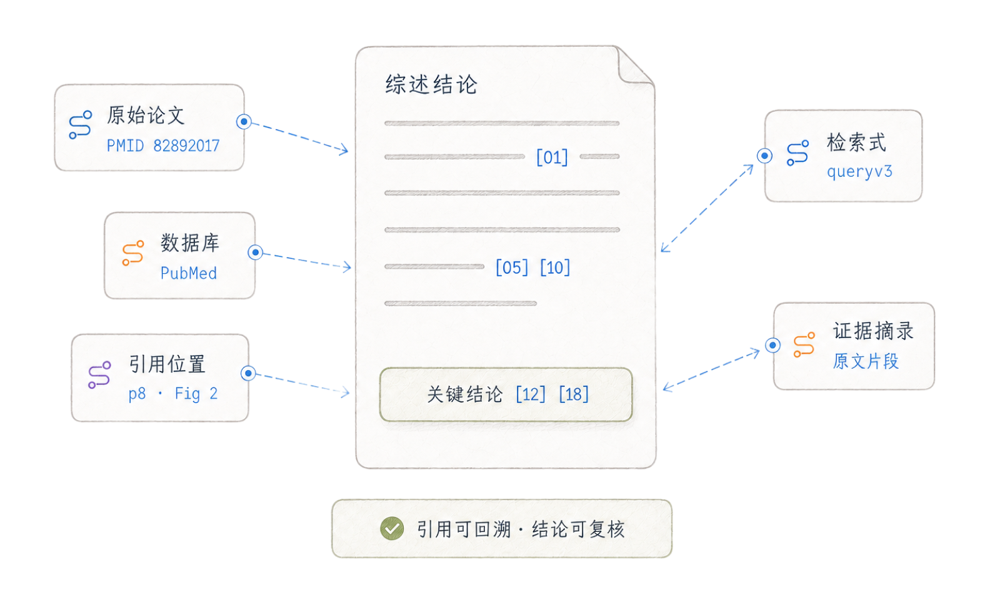
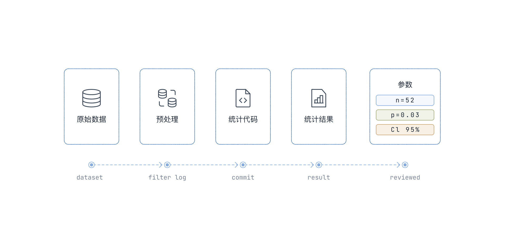
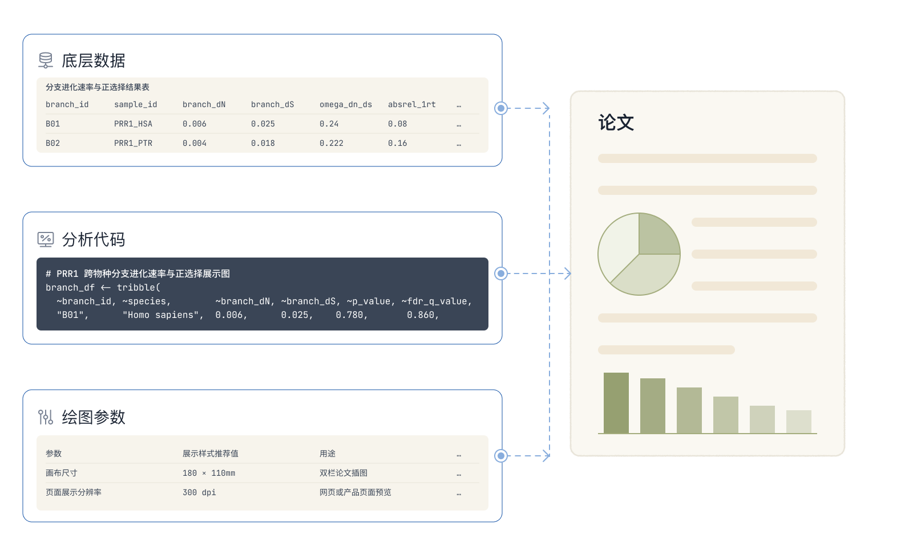
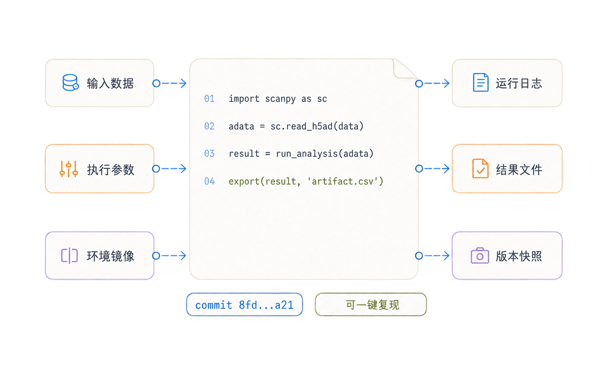
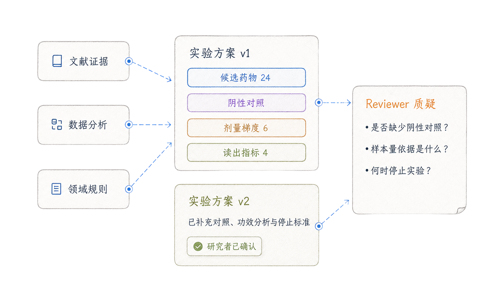
数据尽量留在科研现场，外部访问经过授权，代码与工具在隔离环境中执行

通过标准接口和协议接入模型、数据、工具、智能体、算力和实验设施

Intern-S2 主导科学推理与任务执行，World Model 驱动实验状态理解与结果推演，
SCP 统筹资源连接、流程编排与协作治理
千亿级参数科学大模型支撑科研从问答走向复杂信息理解、长程任务组织、工具验证与持续迭代。
贯通干湿实验，将大语言模型生成的方案转化为真实验证，并基于实验结果持续优化方案。
面向科学智能的万能转换器，连接科研资源、编排实验流程，实现协作共享与全程追溯。
携手顶尖科研机构，跨越多学科前沿，让 AI 从模型能力走向真实科研成果
基于扩散大语言模型统一建模自然语言、蛋白质序列、功能理解与序列设计，实现从“理解蛋白质”到“设计蛋白质”的跨越

携手全球顶尖科研机构共同推动人工智能在科学研究中的深度应用
选择适合你的方式，开始使用书生·端砚